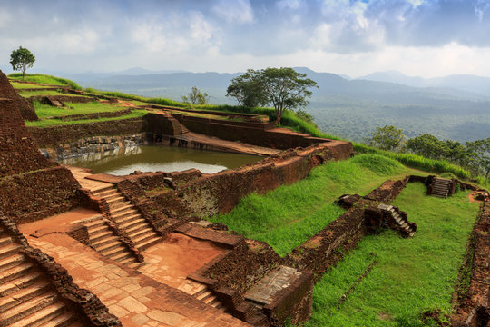

One of the oldest landscaped gardens in the world, featuring symmetrical pools and gravity-fed fountains.
Located at the base of the Sigiriya rock, the Water Gardens exhibit a level of symmetrical precision that is unparalleled in the ancient world. They include three main components: the miniature water garden, the fountain garden, and the larger bathing tanks. This sophisticated layout shows an early understanding of hydraulic engineering and aesthetic landscaping.
The system is fed by an intricate network of underground pressure pipes and gravity conduits connected to the Sigirya reservoir. Remarkably, the fountains are still operational during heavy monsoons, more than 1,500 years after they were built, serving as a testament to the ingenuity of Kasyapa's engineers.
Back to Sigiriya Hub